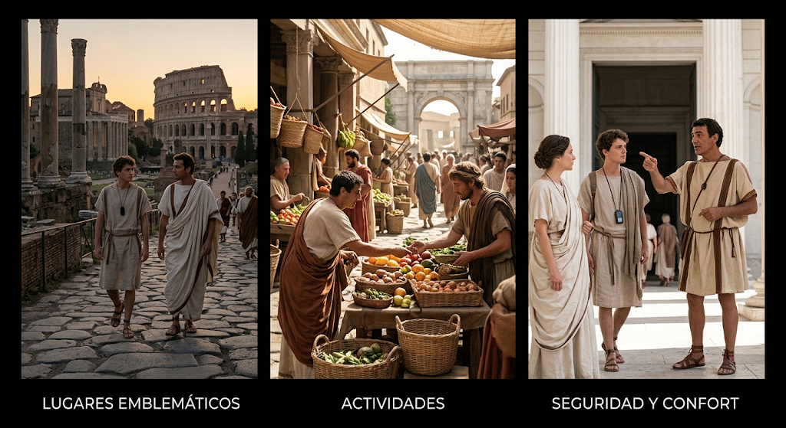

Siente el esplendor y la grandeza de una época dorada.Camina por el corazón del Imperio Romano en su máximo apogeo, donde el imponente Coliseo domina el horizonte y la vida vibra entre foros, templos y vibrantes mercados al atardecer.
Experiencias destacadas:
visita a Lugares emblemáticos: El Anfiteatro Flavio (Coliseo), el Foro Romano, el Panteno y las majestuosas avenidas imperiales.
Actividades: Espectáculos en la arena, paseos por los vibrantes mercados de la ciudad y recorridos guiados por la arquitectura clásica.
Seguridad y confort: Túnicas y vestimenta de época proporcionadas, traductor lingüístico temporal y guías expertos en protocolo imperial.
VIAJA AHORA